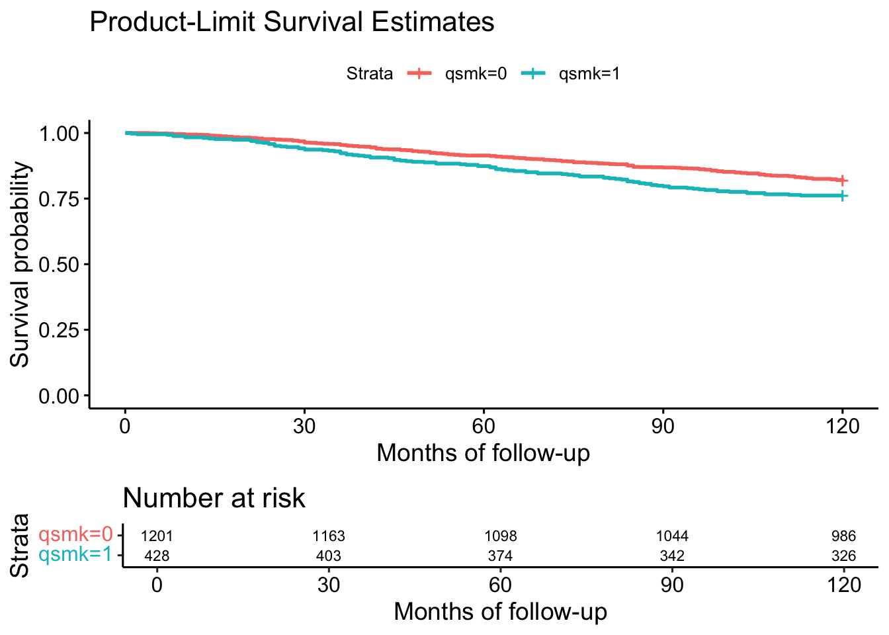
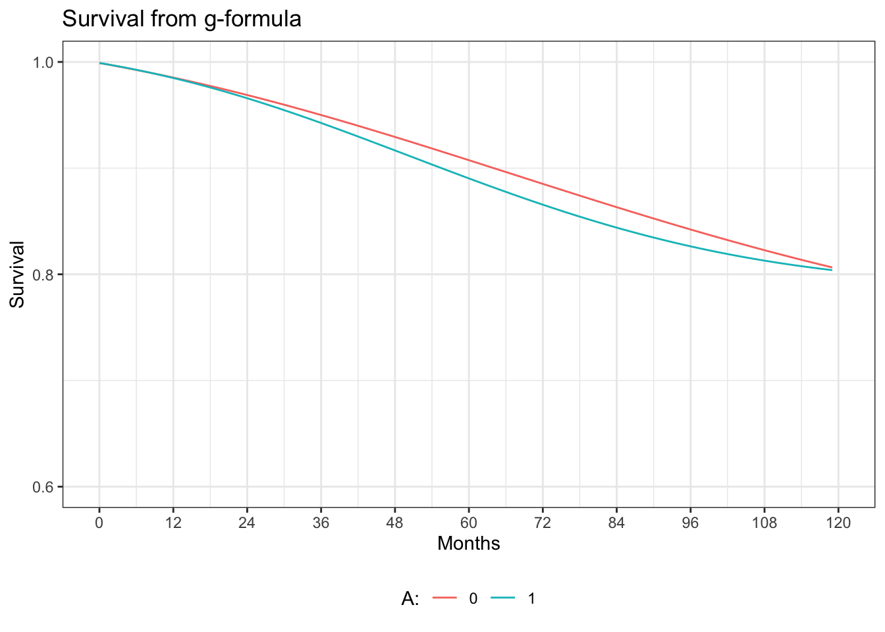

17. Causal survival analysis
Program 17.1
- Nonparametric estimation of survival curves
- Data from NHEFS
library("readxl")
nhefs <- read_excel(here("data","NHEFS.xls"))
# some preprocessing of the data
nhefs$survtime <- ifelse(nhefs$death==0, 120,
(nhefs$yrdth-83)*12+nhefs$modth) # yrdth ranges from 83 to 92
table(nhefs$death, nhefs$qsmk)##
## 0 1
## 0 985 326
## 1 216 102## Min. 1st Qu. Median Mean 3rd Qu. Max.
## 1.00 35.00 61.00 61.14 86.75 120.00#install.packages("survival")
#install.packages("ggplot2") # for plots
#install.packages("survminer") # for plots
library("survival")
library("ggplot2")
library("survminer")## Loading required package: ggpubr## Loading required package: magrittr## Call:
## survdiff(formula = Surv(survtime, death) ~ qsmk, data = nhefs)
##
## N Observed Expected (O-E)^2/E (O-E)^2/V
## qsmk=0 1201 216 237.5 1.95 7.73
## qsmk=1 428 102 80.5 5.76 7.73
##
## Chisq= 7.7 on 1 degrees of freedom, p= 0.005fit <- survfit(Surv(survtime, death) ~ qsmk, data=nhefs)
ggsurvplot(fit, data = nhefs, xlab="Months of follow-up",
ylab="Survival probability",
main="Product-Limit Survival Estimates", risk.table = TRUE)
Program 17.2
- Parametric estimation of survival curves via hazards model
- Data from NHEFS
# creation of person-month data
#install.packages("splitstackshape")
library("splitstackshape")
nhefs.surv <- expandRows(nhefs, "survtime", drop=F)
nhefs.surv$time <- sequence(rle(nhefs.surv$seqn)$lengths)-1
nhefs.surv$event <- ifelse(nhefs.surv$time==nhefs.surv$survtime-1 &
nhefs.surv$death==1, 1, 0)
nhefs.surv$timesq <- nhefs.surv$time^2
# fit of parametric hazards model
hazards.model <- glm(event==0 ~ qsmk + I(qsmk*time) + I(qsmk*timesq) +
time + timesq, family=binomial(), data=nhefs.surv)
summary(hazards.model)##
## Call:
## glm(formula = event == 0 ~ qsmk + I(qsmk * time) + I(qsmk * timesq) +
## time + timesq, family = binomial(), data = nhefs.surv)
##
## Deviance Residuals:
## Min 1Q Median 3Q Max
## -3.7253 0.0546 0.0601 0.0625 0.0783
##
## Coefficients:
## Estimate Std. Error z value Pr(>|z|)
## (Intercept) 6.996e+00 2.309e-01 30.292 <2e-16 ***
## qsmk -3.355e-01 3.970e-01 -0.845 0.3981
## I(qsmk * time) -1.208e-02 1.503e-02 -0.804 0.4215
## I(qsmk * timesq) 1.612e-04 1.246e-04 1.293 0.1960
## time -1.960e-02 8.413e-03 -2.329 0.0198 *
## timesq 1.256e-04 6.686e-05 1.878 0.0604 .
## ---
## Signif. codes: 0 '***' 0.001 '**' 0.01 '*' 0.05 '.' 0.1 ' ' 1
##
## (Dispersion parameter for binomial family taken to be 1)
##
## Null deviance: 4655.3 on 176763 degrees of freedom
## Residual deviance: 4631.3 on 176758 degrees of freedom
## AIC: 4643.3
##
## Number of Fisher Scoring iterations: 9# creation of dataset with all time points under each treatment level
qsmk0 <- data.frame(cbind(seq(0, 119),0,(seq(0, 119))^2))
qsmk1 <- data.frame(cbind(seq(0, 119),1,(seq(0, 119))^2))
colnames(qsmk0) <- c("time", "qsmk", "timesq")
colnames(qsmk1) <- c("time", "qsmk", "timesq")
# assignment of estimated (1-hazard) to each person-month */
qsmk0$p.noevent0 <- predict(hazards.model, qsmk0, type="response")
qsmk1$p.noevent1 <- predict(hazards.model, qsmk1, type="response")
# computation of survival for each person-month
qsmk0$surv0 <- cumprod(qsmk0$p.noevent0)
qsmk1$surv1 <- cumprod(qsmk1$p.noevent1)
# some data management to plot estimated survival curves
hazards.graph <- merge(qsmk0, qsmk1, by=c("time", "timesq"))
hazards.graph$survdiff <- hazards.graph$surv1-hazards.graph$surv0
# plot
ggplot(hazards.graph, aes(x=time, y=surv)) +
geom_line(aes(y = surv0, colour = "0")) +
geom_line(aes(y = surv1, colour = "1")) +
xlab("Months") +
scale_x_continuous(limits = c(0, 120), breaks=seq(0,120,12)) +
scale_y_continuous(limits=c(0.6, 1), breaks=seq(0.6, 1, 0.2)) +
ylab("Survival") +
ggtitle("Survival from hazards model") +
labs(colour="A:") +
theme_bw() +
theme(legend.position="bottom")
Program 17.3
- Estimation of survival curves via IP weighted hazards model
- Data from NHEFS
# estimation of denominator of ip weights
p.denom <- glm(qsmk ~ sex + race + age + I(age*age) + as.factor(education)
+ smokeintensity + I(smokeintensity*smokeintensity)
+ smokeyrs + I(smokeyrs*smokeyrs) + as.factor(exercise)
+ as.factor(active) + wt71 + I(wt71*wt71),
data=nhefs, family=binomial())
nhefs$pd.qsmk <- predict(p.denom, nhefs, type="response")
# estimation of numerator of ip weights
p.num <- glm(qsmk ~ 1, data=nhefs, family=binomial())
nhefs$pn.qsmk <- predict(p.num, nhefs, type="response")
# computation of estimated weights
nhefs$sw.a <- ifelse(nhefs$qsmk==1, nhefs$pn.qsmk/nhefs$pd.qsmk,
(1-nhefs$pn.qsmk)/(1-nhefs$pd.qsmk))
summary(nhefs$sw.a)## Min. 1st Qu. Median Mean 3rd Qu. Max.
## 0.3312 0.8640 0.9504 0.9991 1.0755 4.2054# creation of person-month data
nhefs.ipw <- expandRows(nhefs, "survtime", drop=F)
nhefs.ipw$time <- sequence(rle(nhefs.ipw$seqn)$lengths)-1
nhefs.ipw$event <- ifelse(nhefs.ipw$time==nhefs.ipw$survtime-1 &
nhefs.ipw$death==1, 1, 0)
nhefs.ipw$timesq <- nhefs.ipw$time^2
# fit of weighted hazards model
ipw.model <- glm(event==0 ~ qsmk + I(qsmk*time) + I(qsmk*timesq) +
time + timesq, family=binomial(), weight=sw.a,
data=nhefs.ipw)## Warning in eval(family$initialize): non-integer #successes in a binomial glm!##
## Call:
## glm(formula = event == 0 ~ qsmk + I(qsmk * time) + I(qsmk * timesq) +
## time + timesq, family = binomial(), data = nhefs.ipw, weights = sw.a)
##
## Deviance Residuals:
## Min 1Q Median 3Q Max
## -7.1859 0.0528 0.0595 0.0640 0.1452
##
## Coefficients:
## Estimate Std. Error z value Pr(>|z|)
## (Intercept) 6.897e+00 2.208e-01 31.242 <2e-16 ***
## qsmk 1.794e-01 4.399e-01 0.408 0.6834
## I(qsmk * time) -1.895e-02 1.640e-02 -1.155 0.2481
## I(qsmk * timesq) 2.103e-04 1.352e-04 1.556 0.1198
## time -1.889e-02 8.053e-03 -2.345 0.0190 *
## timesq 1.181e-04 6.399e-05 1.846 0.0649 .
## ---
## Signif. codes: 0 '***' 0.001 '**' 0.01 '*' 0.05 '.' 0.1 ' ' 1
##
## (Dispersion parameter for binomial family taken to be 1)
##
## Null deviance: 4643.9 on 176763 degrees of freedom
## Residual deviance: 4626.2 on 176758 degrees of freedom
## AIC: 4633.5
##
## Number of Fisher Scoring iterations: 9# creation of survival curves
ipw.qsmk0 <- data.frame(cbind(seq(0, 119),0,(seq(0, 119))^2))
ipw.qsmk1 <- data.frame(cbind(seq(0, 119),1,(seq(0, 119))^2))
colnames(ipw.qsmk0) <- c("time", "qsmk", "timesq")
colnames(ipw.qsmk1) <- c("time", "qsmk", "timesq")
# assignment of estimated (1-hazard) to each person-month */
ipw.qsmk0$p.noevent0 <- predict(ipw.model, ipw.qsmk0, type="response")
ipw.qsmk1$p.noevent1 <- predict(ipw.model, ipw.qsmk1, type="response")
# computation of survival for each person-month
ipw.qsmk0$surv0 <- cumprod(ipw.qsmk0$p.noevent0)
ipw.qsmk1$surv1 <- cumprod(ipw.qsmk1$p.noevent1)
# some data management to plot estimated survival curves
ipw.graph <- merge(ipw.qsmk0, ipw.qsmk1, by=c("time", "timesq"))
ipw.graph$survdiff <- ipw.graph$surv1-ipw.graph$surv0
# plot
ggplot(ipw.graph, aes(x=time, y=surv)) +
geom_line(aes(y = surv0, colour = "0")) +
geom_line(aes(y = surv1, colour = "1")) +
xlab("Months") +
scale_x_continuous(limits = c(0, 120), breaks=seq(0,120,12)) +
scale_y_continuous(limits=c(0.6, 1), breaks=seq(0.6, 1, 0.2)) +
ylab("Survival") +
ggtitle("Survival from IP weighted hazards model") +
labs(colour="A:") +
theme_bw() +
theme(legend.position="bottom")
Program 17.4
- Estimating of survival curves via g-formula
- Data from NHEFS
# fit of hazards model with covariates
gf.model <- glm(event==0 ~ qsmk + I(qsmk*time) + I(qsmk*timesq)
+ time + timesq + sex + race + age + I(age*age)
+ as.factor(education) + smokeintensity
+ I(smokeintensity*smokeintensity) + smkintensity82_71
+ smokeyrs + I(smokeyrs*smokeyrs) + as.factor(exercise)
+ as.factor(active) + wt71 + I(wt71*wt71),
data=nhefs.surv, family=binomial())
summary(gf.model)##
## Call:
## glm(formula = event == 0 ~ qsmk + I(qsmk * time) + I(qsmk * timesq) +
## time + timesq + sex + race + age + I(age * age) + as.factor(education) +
## smokeintensity + I(smokeintensity * smokeintensity) + smkintensity82_71 +
## smokeyrs + I(smokeyrs * smokeyrs) + as.factor(exercise) +
## as.factor(active) + wt71 + I(wt71 * wt71), family = binomial(),
## data = nhefs.surv)
##
## Deviance Residuals:
## Min 1Q Median 3Q Max
## -4.3160 0.0244 0.0395 0.0640 0.3303
##
## Coefficients:
## Estimate Std. Error z value Pr(>|z|)
## (Intercept) 9.272e+00 1.379e+00 6.724 1.76e-11 ***
## qsmk 5.959e-02 4.154e-01 0.143 0.885924
## I(qsmk * time) -1.485e-02 1.506e-02 -0.987 0.323824
## I(qsmk * timesq) 1.702e-04 1.245e-04 1.367 0.171643
## time -2.270e-02 8.437e-03 -2.690 0.007142 **
## timesq 1.174e-04 6.709e-05 1.751 0.080020 .
## sex 4.368e-01 1.409e-01 3.101 0.001930 **
## race -5.240e-02 1.734e-01 -0.302 0.762572
## age -8.750e-02 5.907e-02 -1.481 0.138536
## I(age * age) 8.128e-05 5.470e-04 0.149 0.881865
## as.factor(education)2 1.401e-01 1.566e-01 0.895 0.370980
## as.factor(education)3 4.335e-01 1.526e-01 2.841 0.004502 **
## as.factor(education)4 2.350e-01 2.790e-01 0.842 0.399750
## as.factor(education)5 3.750e-01 2.386e-01 1.571 0.116115
## smokeintensity -1.626e-03 1.430e-02 -0.114 0.909431
## I(smokeintensity * smokeintensity) -7.182e-05 2.390e-04 -0.301 0.763741
## smkintensity82_71 -1.686e-03 6.501e-03 -0.259 0.795399
## smokeyrs -1.677e-02 3.065e-02 -0.547 0.584153
## I(smokeyrs * smokeyrs) -5.280e-05 4.244e-04 -0.124 0.900997
## as.factor(exercise)1 1.469e-01 1.792e-01 0.820 0.412300
## as.factor(exercise)2 -1.504e-01 1.762e-01 -0.854 0.393177
## as.factor(active)1 -1.601e-01 1.300e-01 -1.232 0.218048
## as.factor(active)2 -2.294e-01 1.877e-01 -1.222 0.221766
## wt71 6.222e-02 1.902e-02 3.271 0.001073 **
## I(wt71 * wt71) -4.046e-04 1.129e-04 -3.584 0.000338 ***
## ---
## Signif. codes: 0 '***' 0.001 '**' 0.01 '*' 0.05 '.' 0.1 ' ' 1
##
## (Dispersion parameter for binomial family taken to be 1)
##
## Null deviance: 4655.3 on 176763 degrees of freedom
## Residual deviance: 4185.7 on 176739 degrees of freedom
## AIC: 4235.7
##
## Number of Fisher Scoring iterations: 10# creation of dataset with all time points for
# each individual under each treatment level
gf.qsmk0 <- expandRows(nhefs, count=120, count.is.col=F)
gf.qsmk0$time <- rep(seq(0, 119), nrow(nhefs))
gf.qsmk0$timesq <- gf.qsmk0$time^2
gf.qsmk0$qsmk <- 0
gf.qsmk1 <- gf.qsmk0
gf.qsmk1$qsmk <- 1
gf.qsmk0$p.noevent0 <- predict(gf.model, gf.qsmk0, type="response")
gf.qsmk1$p.noevent1 <- predict(gf.model, gf.qsmk1, type="response")
#install.packages("dplyr")
library("dplyr")##
## Attaching package: 'dplyr'## The following objects are masked from 'package:stats':
##
## filter, lag## The following objects are masked from 'package:base':
##
## intersect, setdiff, setequal, uniongf.qsmk0.surv <- gf.qsmk0 %>% group_by(seqn) %>% mutate(surv0 = cumprod(p.noevent0))
gf.qsmk1.surv <- gf.qsmk1 %>% group_by(seqn) %>% mutate(surv1 = cumprod(p.noevent1))
gf.surv0 <- aggregate(gf.qsmk0.surv, by=list(gf.qsmk0.surv$time), FUN=mean)[c("qsmk", "time", "surv0")]
gf.surv1 <- aggregate(gf.qsmk1.surv, by=list(gf.qsmk1.surv$time), FUN=mean)[c("qsmk", "time", "surv1")]
gf.graph <- merge(gf.surv0, gf.surv1, by=c("time"))
gf.graph$survdiff <- gf.graph$surv1-gf.graph$surv0
# plot
ggplot(gf.graph, aes(x=time, y=surv)) +
geom_line(aes(y = surv0, colour = "0")) +
geom_line(aes(y = surv1, colour = "1")) +
xlab("Months") +
scale_x_continuous(limits = c(0, 120), breaks=seq(0,120,12)) +
scale_y_continuous(limits=c(0.6, 1), breaks=seq(0.6, 1, 0.2)) +
ylab("Survival") +
ggtitle("Survival from g-formula") +
labs(colour="A:") +
theme_bw() +
theme(legend.position="bottom")
Program 17.5
- Estimating of median survival time ratio via a structural nested AFT model
- Data from NHEFS
# some preprocessing of the data
nhefs <- read_excel(here("data", "NHEFS.xls"))
nhefs$survtime <- ifelse(nhefs$death==0, NA, (nhefs$yrdth-83)*12+nhefs$modth) # * yrdth ranges from 83 to 92
# model to estimate E[A|L]
modelA <- glm(qsmk ~ sex + race + age + I(age*age)
+ as.factor(education) + smokeintensity
+ I(smokeintensity*smokeintensity) + smokeyrs
+ I(smokeyrs*smokeyrs) + as.factor(exercise)
+ as.factor(active) + wt71 + I(wt71*wt71),
data=nhefs, family=binomial())
nhefs$p.qsmk <- predict(modelA, nhefs, type="response")
d <- nhefs[!is.na(nhefs$survtime),] # select only those with observed death time
n <- nrow(d)
# define the estimating function that needs to be minimized
sumeef <- function(psi){
# creation of delta indicator
if (psi>=0){
delta <- ifelse(d$qsmk==0 |
(d$qsmk==1 & psi <= log(120/d$survtime)),
1, 0)
} else if (psi < 0) {
delta <- ifelse(d$qsmk==1 |
(d$qsmk==0 & psi > log(d$survtime/120)), 1, 0)
}
smat <- delta*(d$qsmk-d$p.qsmk)
sval <- sum(smat, na.rm=T)
save <- sval/n
smat <- smat - rep(save, n)
# covariance
sigma <- t(smat) %*% smat
if (sigma == 0){
sigma <- 1e-16
}
estimeq <- sval*solve(sigma)*t(sval)
return(estimeq)
}
res <- optimize(sumeef, interval = c(-0.2,0.2))
psi1 <- res$minimum
objfunc <- as.numeric(res$objective)
# Use simple bisection method to find estimates of lower and upper 95% confidence bounds
increm <- 0.1
for_conf <- function(x){
return(sumeef(x) - 3.84)
}
if (objfunc < 3.84){
# Find estimate of where sumeef(x) > 3.84
# Lower bound of 95% CI
psilow <- psi1
testlow <- objfunc
countlow <- 0
while (testlow < 3.84 & countlow < 100){
psilow <- psilow - increm
testlow <- sumeef(psilow)
countlow <- countlow + 1
}
# Upper bound of 95% CI
psihigh <- psi1
testhigh <- objfunc
counthigh <- 0
while (testhigh < 3.84 & counthigh < 100){
psihigh <- psihigh + increm
testhigh <- sumeef(psihigh)
counthigh <- counthigh + 1
}
# Better estimate using bisection method
if ((testhigh > 3.84) & (testlow > 3.84)){
# Bisection method
left <- psi1
fleft <- objfunc - 3.84
right <- psihigh
fright <- testhigh - 3.84
middle <- (left + right) / 2
fmiddle <- for_conf(middle)
count <- 0
diff <- right - left
while (!(abs(fmiddle) < 0.0001 | diff < 0.0001 | count > 100)){
test <- fmiddle * fleft
if (test < 0){
right <- middle
fright <- fmiddle
} else {
left <- middle
fleft <- fmiddle
}
middle <- (left + right) / 2
fmiddle <- for_conf(middle)
count <- count + 1
diff <- right - left
}
psi_high <- middle
objfunc_high <- fmiddle + 3.84
# lower bound of 95% CI
left <- psilow
fleft <- testlow - 3.84
right <- psi1
fright <- objfunc - 3.84
middle <- (left + right) / 2
fmiddle <- for_conf(middle)
count <- 0
diff <- right - left
while(!(abs(fmiddle) < 0.0001 | diff < 0.0001 | count > 100)){
test <- fmiddle * fleft
if (test < 0){
right <- middle
fright <- fmiddle
} else {
left <- middle
fleft <- fmiddle
}
middle <- (left + right) / 2
fmiddle <- for_conf(middle)
diff <- right - left
count <- count + 1
}
psi_low <- middle
objfunc_low <- fmiddle + 3.84
psi <- psi1
}
}
c(psi, psi_low, psi_high)## [1] -0.05041591 -0.22312099 0.33312901